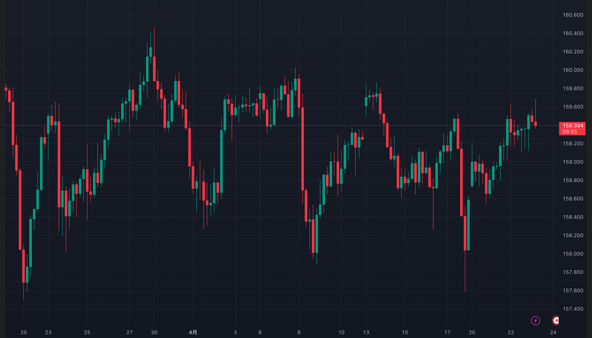
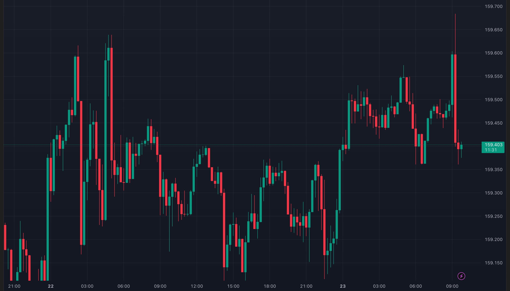
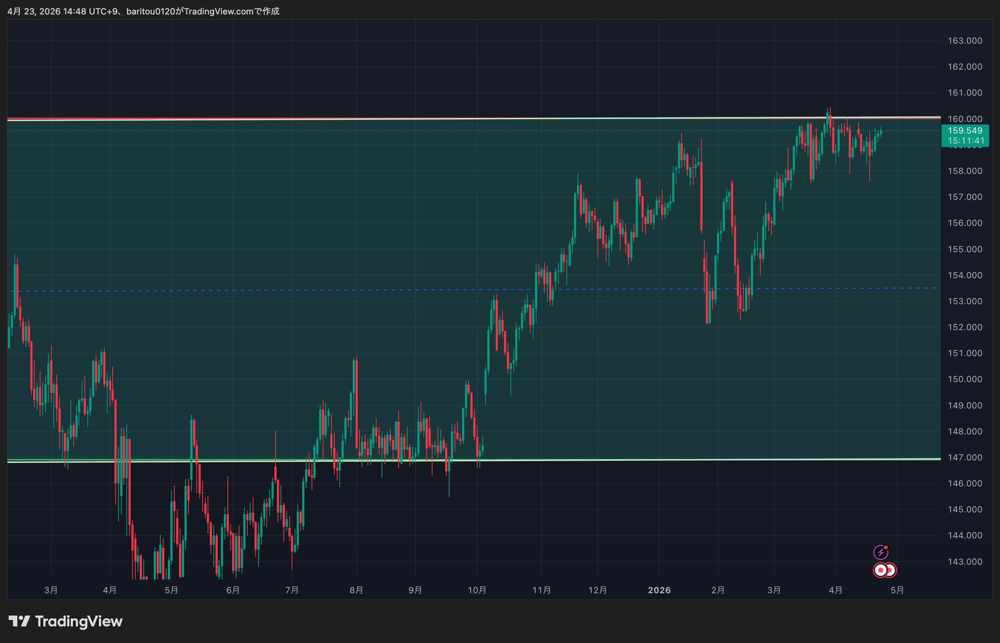
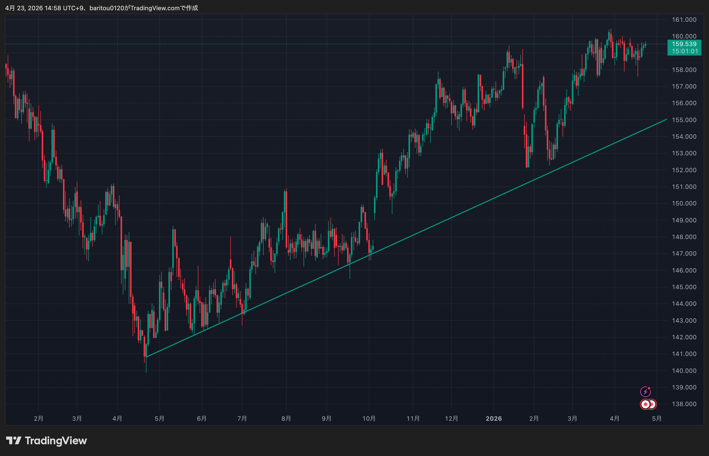
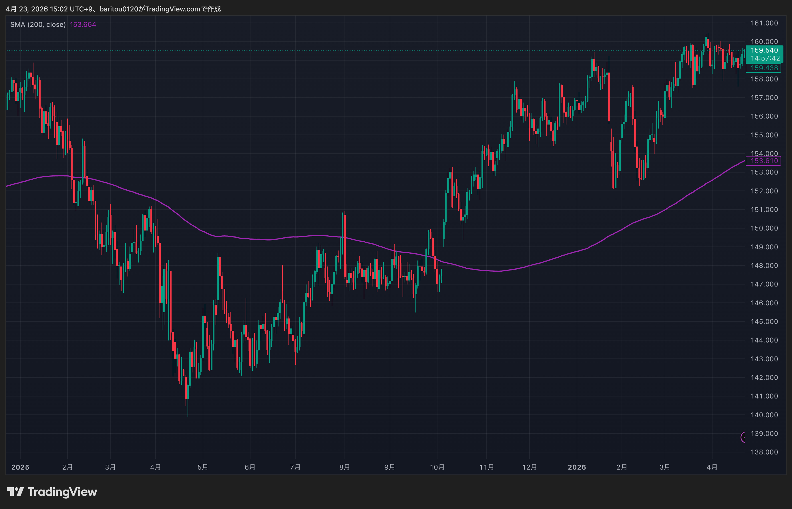
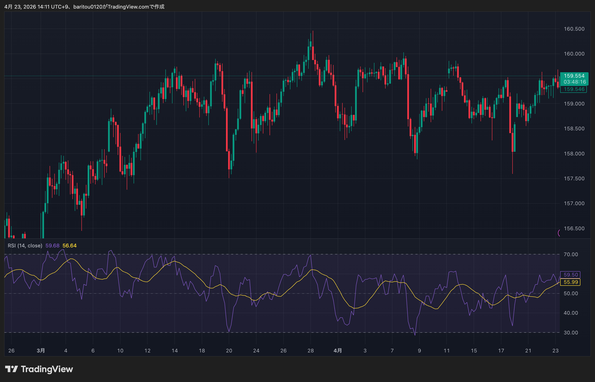
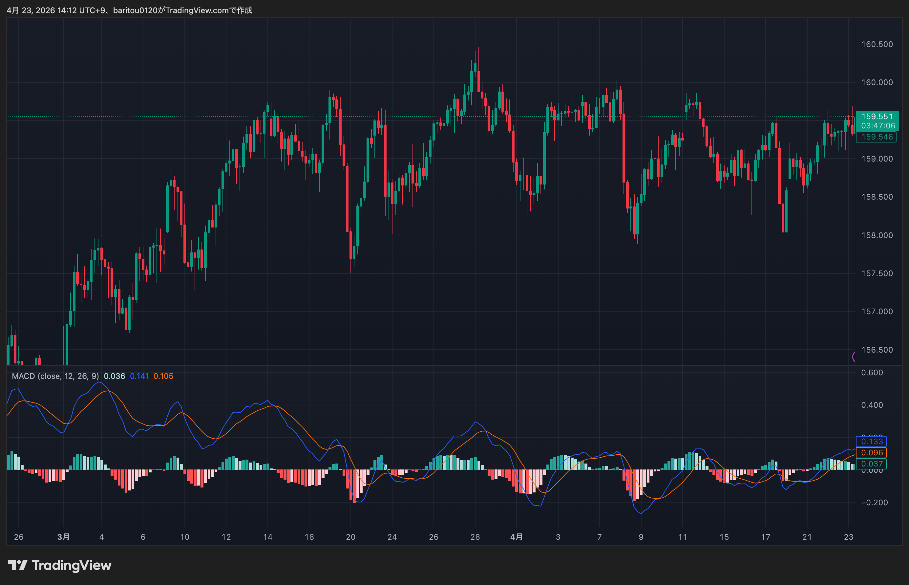

📖 撮影マニュアル
このチェックリストで撮影作業を担当される方へ。撮影前に必ず一読してください。不明点があれば運営者まで連絡ください。
🚀 1. 最速ワークフロー（Claude Code 直接貼り付け）
TradingView の画面で撮りたいチャートを表示したら、以下の手順で進めます：
- ⌘ Cmd + ⇧ Shift + S を押す → TradingView内蔵のスクショ機能が起動し、画像がクリップボードに自動コピーされます
- Claude Code のチャット画面で ⌘ Cmd + V → 画像がそのまま貼り付けられ、その場でフィードバックが来ます
- OKが出たら次の項目に進む。必要なら後でまとめてファイル保存（詳細は後述）
💡 これが最速です。 macOS標準の ⌘+⇧+4 も使えますが、Desktopにファイルが溜まり管理が面倒。TradingView内蔵の ⌘+⇧+S ならクリップボード1発、確認1発、ファイル化は後でまとめて、が最も効率的。
💾 2. ファイルの保存タイミング
Claude Code でOKが出たショットは、以下のいずれかで保存：
- 方法A（推奨）: TradingView 画面右上のカメラアイコン → 「Save chart image」 → Downloadsフォルダに自動保存 → 適切なファイル名にリネーム
- 方法B: ⌘+⇧+4 でmacOS画面キャプチャ → Desktopに保存 → リネーム
保存先ファイル名は、チェックリストの各項目の下に表示される 04_indicators/ind_XXX.png 形式に合わせてください。
⚠️ 承認されたスクショは 必ず ファイル保存してください。Claude Codeへの貼り付けだけでは、動画編集時に素材が使えません。
🎨 3. 色・太さルール（全員守る）
ラインやインジケーターの色は、下記の統一ルールに従ってください。見た目がチャンネル全体で揃わないと動画の信頼感が下がります。
| 色名 | HEX | 使うところ |
|---|---|---|
| 緑 | #26A69A | 陽線／支持ライン／上昇トレンドライン |
| 赤 | #EF5350 | 陰線／抵抗ライン／下降トレンドライン |
| 紫 | #9C27B0 | MA200（長期トレンド線） |
| 青 | #2196F3 | MA20／EMA（短期） |
| 橙 | #FF9800 | MA50（中短期） |
| 桃 | #E91E63 | MA100（中長期） |
- 線の太さは 2px（デフォルト1pxは細すぎて動画で見えない）
- ラインツールのデフォルトはピンクになることが多い → 必ず上記色に変更
- 一度変更したら「スタイルを既定として保存」をONにすると、次回以降も自動適用される
🖼️ 4. 画面設定（固定）
| 項目 | 設定値 |
|---|---|
| 背景 | 黒（ダークテーマ） |
| タイムゾーン | UTC+9（日本時間） |
| ローソク陽線色 | #26A69A |
| ローソク陰線色 | #EF5350 |
| グリッド | デフォルト（薄いグレー） |
| 画面比率 | 16:9 を推奨（Remotion合成向け） |
| 左上の凡例（インジ名） | 表示ON（インジ設定値の確認用） |
💳 5. 無料プラン vs 有料プラン
TradingView には無料プランと有料プラン（Pro, Pro+, Premium）があります。以下が撮影に関係する違い：
| 機能 | 無料 | 有料 | 撮影への影響 |
|---|---|---|---|
| インジケーター同時追加 | 最大2つ | 無制限 | MA×4（20/50/100/200）は有料必要 |
| 2分割レイアウト | ❌ | ✅ | 平均足vs通常足 比較、2分割チャート は有料必要 |
| 4分割レイアウト | ❌ | ✅ | マルチタイム4分割 は有料必要 |
| Bar Replay | 日足のみ | 全足 | 4H/1H以下の過去場面を探す時は有料必要 |
| カスタム時間足 | ❌ | ✅ | デフォルト時間足（5m/15m/1h/4h/1d/1w）は無料OK |
| チャートレイアウト保存数 | 1つ | 複数 | 撮影中は1つで十分 |
各チェックリスト項目には次のラベルを付けます：
- 無料OK — 無料プランで撮影可能
- 要有料 — TradingView Pro以上のプランが必要
⚠️ 要有料 項目に遭遇したら、撮影せずに運営者へ連絡してください。こちらで代替撮影します。
⚠️ 6. よくあるミス（本日の実例から）
- 時間足を間違える — チェックリストに「4H」と書いてあるのに日足で撮ってしまう。撮影前に上部の時間足セレクタを必ず確認。迷ったら x軸のラベル間隔で判定（1D なら1日1本、4H なら1日6本）
- インジの類似名誤選択 — 「Moving Average」と「Multiple Moving Averages」は別物。凡例に「50, 100, 150, 200, ...」と複数期間が並んだら誤選択。単一期間の
SMA (50, close)が正解 - Pivot Points Standard のデフォルト表示（R5/S5まで11本） — 設定→スタイルタブで R4/R5/S4/S5 をOFFにして R1-R3/S1-S3 の7本に絞る
- ラインのデフォルト色（ピンク） — 必ず上記の緑/赤/紫に変更し「既定として保存」
- 縦ズーム不足 — R1-R3やS1-S3が画面外。価格軸を上下ドラッグして縮小すると全体が見える
- チャート種類切替が見つからない — 「平均足」はインジケーター追加ではなくチャート種類切替（上部ツールバーのローソク足アイコン横のメニュー）
📎 7. お手本スクショ（既存素材）
実際にOKが出ているサンプルを参考にしてください。
クリーンチャート（2. 素のチャート）

インジ無し・黒背景のみ

短時間足も同じシンプル構成
加工済みチャート（3. 描画あり）

緑=支持／赤=抵抗

安値→安値を結ぶ緑線

紫の太線がなだらかに

サブウィンドウ

ヒストグラム＋シグナル線
🤖 8. Claude Code を使う場合（オプション）
ご自身の PC で Claude Code（Anthropic公式のコーディング補助AI）を使う場合、最初のセッションで以下のプロンプトをそのまま貼り付けてください。これでClaude Codeが今回の作業内容を把握し、スクショを貼るだけで判定してくれるようになります。
📋 コピペ用プロンプト（下の枠ごと選択してコピー）
こんにちは。波動シグナル研究所というYouTubeチャンネル向けに TradingViewのスクショを撮影する作業を引き受けています。 【プロジェクト概要】 - チャンネル: 波動シグナル研究所（FX教育YouTube） - 運営: 別の担当者（以下「運営者」） - 役割: TradingViewチャートのスクショを撮影して、運営者に共有 【参照すべき資料】 チェックリストURL: https://signalath.com/youtube/tradingviewchecklist.html → 「📖 撮影マニュアルを開く」ボタンを押すと完全マニュアルが見れる 【作業範囲】 チェックリストの #73 以降 を順番に撮影する 【画像判定のお願い】 スクショを貼り付けたら、以下の観点でチェックしてください： 1. 銘柄が正しいか（USDJPY/XAUUSD/BTCUSD/ETHUSD など） 2. 時間足が正しいか（5m/15m/1h/4h/1d/1w） 3. インジケーターの設定（期間・色・位置）が checklist.html の指定通りか 4. 凡例（左上のインジ名表示）に間違いが無いか 5. 色ルール: 緑#26A69A（支持/陽線）、赤#EF5350（抵抗/陰線）、紫#9C27B0（MA200） 6. ラインの太さは2px（デフォルト1pxは細すぎ） 【応答スタイル】 - FX初心者なので、技術用語は平易に噛み砕いて - OK/NG をまず最初に明示 - NGなら何をどう直せばいいかを具体的に - よくあるミスも併せて教えてくれると助かる 【禁止事項】 - 海外FXブローカー名（Axon等）の露出 - IBリンクの言及 - 運営者の取引実績の言及 準備OKなら「#73 の手順を教えて」と聞くので、 checklist.html の該当項目の howto を元に案内してください。
💡 このプロンプトをClaude Codeのチャット欄に貼ってEnterすれば、前提共有完了です。あとは ⌘+⇧+S → ⌘+V でスクショを貼るだけ。
⭐ 9. 難易度ラベルの見方
各項目の項目名の前に、3段階の難易度が表示されています。作業計画の参考にしてください：
| 表示 | 意味 | 所要時間の目安 | 例 |
|---|---|---|---|
| ⭐☆☆ | 簡単 — URLを開いて撮るだけ／銘柄と時間足を選ぶだけ | 1〜2分 | ログイン画面、素チャート、経済カレンダー |
| ⭐⭐☆ | ふつう — インジ追加・色変更・描画ツール使用 | 3〜5分 | 水平線、MA200、ピボットポイント |
| ⭐⭐⭐ | むずい — 過去の特定場面探し、複合インジ、有料機能 | 5〜15分 | ゴールデンクロス探し、RSIダイバージェンス、SMC系 |
💡 ⭐☆☆ の項目から片付けるとテンポ良く進みます。⭐⭐⭐ はまとめて気力のある時間帯に。
📬 10. 困ったら
- 項目の howto（チェックリストで項目をクリックすると表示される詳細）を読み返す
- それでも不明なら Claude Code のチャットで「#XX の手順を教えて」と聞く → 待機しなくても画像だけ送れば判定してくれる
- 有料機能に遭遇した場合は、撮影せず運営者へ連絡
🗓️ 11. 運用ルール
- 作業時間の目安: 1項目あたり 3〜5分（調子が出てきたら2分/項目）
- 1セッションで 10項目 終わらせて休憩、が目安
- 不明点/失敗/代替案があったら即ログに残す（このチェックリストのメモ欄または別途連絡）
- 撮影完了したらチェックボックスにチェック → ブラウザに記録が保存される（同じPC/ブラウザで続きから再開可）